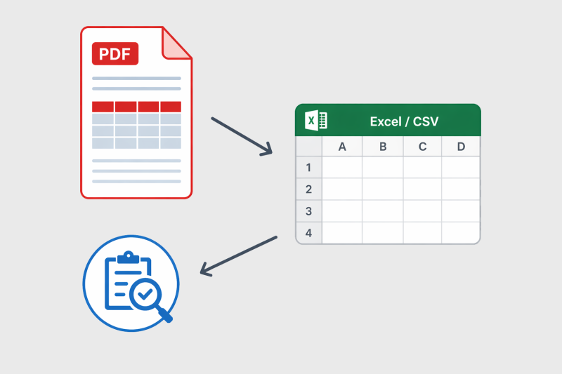
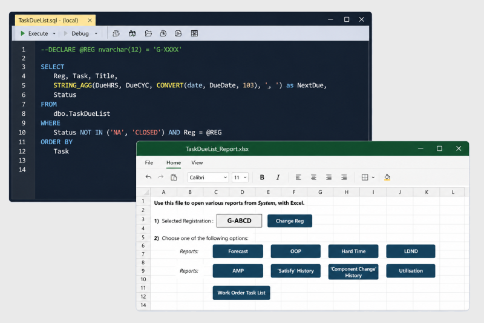

We support aircraft continued airworthiness through our ability to structure, clean, migrate and visualise data using our aviation knowledge and our technical and coding abilities. We regularly convert complex aircraft technical data (MPD, AMM, LDND) into structured formats suitable for controlling systems or into reports, with thorough checks in place to ensure accuracy and reliability.
Aircraft technical data often arrives in inconsistent formats or complex layouts, even when different documents are supplied by the same manufacturer or by a previous operator. We can map tabulated PDF data (performing OCR where required), to an Excel file and/or manipulate complex Excel layouts, using bespoke code to structure and prepare the data into any required format or layout. This significantly reduces manual processing time while maintaining a high level of data accuracy, supported by checklists, independent audits and comparison to the source data.

Aircraft and systems are regularly introduced, replaced, transitioned or retired, often requiring large volumes of technical data to be reviewed, restructured and transferred within short timeframes, while ensuring a controlled and efficient migration process. We have experience with multiple CAMO software and can support system transitions and data transfers between various controlling systems. Our internal team can migrate your aircraft data into our own controlling system and ensure that your aircraft or helicopter reflects the latest MPD/AMP/AMM status, ultimately maintaining its airworthiness and value.
Routine data tasks and reporting requirements can place a significant demand on operational teams, particularly when working across multiple systems and datasets. We have developed and applied a number of solutions using SQL, MySQL, Excel Macros, Power Query and Power Automate to streamline these processes and improve efficiency for both internal teams and external customers. We can supplement our code with an Excel-based front end to provide a familiar and accessible interface for users while maintaining control of the underlying data.
